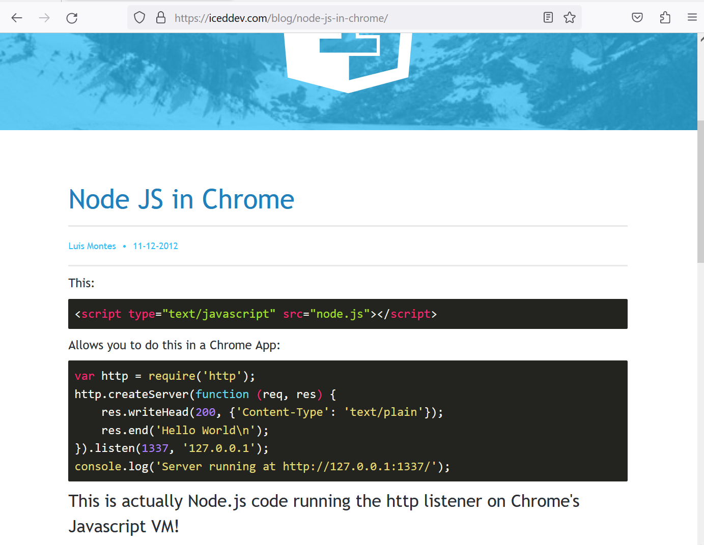

SeattleJS
2023
Luis Montes
 @monteslu
@monteslu 
 @monteslu@Fosstodon.org
@monteslu@Fosstodon.org
Web 1.0
1993: HTML 1.0
1995: HTML 2.0: <img> tag!
2006: XMLHttpRequest
Web 2.0!
Web APIs since
websockets, webRTC, video, PWAs
bluetooth, serial, usb, robotics!
webGPU, WASM, threading
So excited for web 3!
Decentralization !
Now ?!?!
Web 3 Browser APIs:
...
...
Ø
decentralization requires each peer to be a client AND a server
So build a native app?
https://YouMightNotNeedElectron.com/
CascadiaJS 2012
How do we share local servers?
Reverse Proxies!
ngrok / localtunnel / hsync


Put the proxy in a web page.
https://browserver.netlify.appNode in the browser
(for real this time)
https://expressnode.netlify.appTunnel any port through this way.
(good bye firewalls)